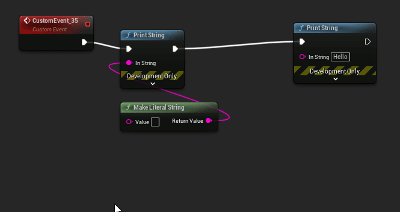
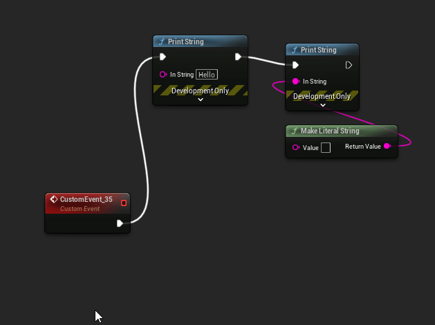

Command List
Blueprint Assist hotkey menu
- Open a menu which displays the hotkeys for the plugin

Open window menu
- Search and open a menu or setting with
CTRL + SHIFT + K

Select pin
-
Use the
ArrowKeysto move the selected pin -
Selecting a node will select the top-right execution pin
-
You can also select a pin by left-clicking on it

Select node
- Select a node using
CTRL + ArrowKeys

Open blueprint creation menu
- Press
Tabto open the blueprint creation menu. With a pin selected it will create the menu for the pin

Format node
- With a node selected press
Fto format the block of nodes - If the block of nodes has an event node, it will use it as the root node
- Two styles for parameters:
Helixing: Parameter nodes are placed belowLHS (Left-hand side): Parameter nodes are placed on the LHS of the node
- There are commands to forcing a formatting style (unbound by default)
- Format with Helixing
- Format with LHS (left-hand side)
- Important settings:
- Account for comment boxes (Experimental): Uses comment box bounds when formatting
- Center branches: centers nodes instead of positioning them top-to-bottom

Format node selectively
- With multiple nodes selected press
Shift + Fto format only the selected nodes - If you have a single node selected, this command will selectively format the node tree to the right

Format all events
-
Press
CTRL + Rto format all event nodes on the graph. -
Using the option:
Use columns for format all, events are laid out in columns based on the type of event node -
Blocks can be reordered by moving the height of the event node above the other block.

Delete and link
- With a node selected press
SHIFT + DELto delete the node while preserving the links

Connect unlinked pins
- With a node selected, press
Qto connect unlinked pins to nearby nodes

Link nodes between wires
- With a node selected, hover a wire or pin and press
CTRL + Qto link the node

Link to hovered pin
- Select a pin, then hover another pin and press
CTRL + SHIFT + Qto link the two pins

Disconnect selected wire or pin
- Hover a wire or pin and press
Dto disconnect

Disconnect node execution
- Select a node and press
ALT + Dto disconnect node execution

Disconnect all pins
- Select a node and press
CTRL + SHIFT + Dto disconnect all pins

Toggle context sensitive
- With the blueprint creation menu open, press
CTRL + Tto toggle context sensitive

Swap node left/right
- With a node selected, press
CTRL + SHIFT + (Left / Right)to swap the node execution left or right

Edit selected pin value
- Press
CTRL + Eto start editing the value of the selected pin - Pressing the hotkey again will move to the next editable value on the pin (for example when editing the Delta Location Vector)

Switch workflow mode
- Press
ALT + Oto switch workflow mode. This is mainly for AnimBP, WidgetBP and BehaviorTrees - In the AnimBP, it will open a menu since there are more than 2 modes to be selected from
Edit details menu
- Pressing
CTRL + SHIFT + Ewill bring up a menu with a list of variables in the Details panel - Selecting an item in the menu will bring keyboard focus to that variable (boolean variables will be toggled)

Zoom to node tree
- Pressing
CTRL + Equalswill zoom to fit the node tree (all nodes connected to the current node)

Add Symbol menu
- Pressing
CTRL + SHIFT + Awill open a menu allowing you to add a new graph, function macro, variable or event dispatcher

Go to symbol menu
- Pressing
CTRL + Gwill open a menu allowing you to bring viewport focus to any function / macro / graph / event

Focus search box menu
- Pressing
CTRL + ALT + Fwill open a menu allowing you to bring keyboard focus to a search box in the current window

Select variable menu
- Pressing
CTRL + SHIFT + Gwill open a menu allowing you to focus a variable in the blueprint

Open context menu for pin
- Pressing
CTRL + Mwill bring up the pin actions for the selected pin

Open context menu for node
- Pressing
CTRL + SHIFT + Mwill bring up the node actions for the selected node

Duplicate variable node
- Pressing
CTRL + SHIFT + Vwill duplicate a variable node for each of it's links

Replace node
- Replace the selected node with a new node by pressing
CTRL + H

Shift camera
- Move the camera using
SHIFT + Arrow Keys
Toggle nodes
- Disabled or enable selected nodes using
CTRL + \

Split / recombine pin
- Split hovered or selected pin using
ALT + Q - Recombine using
ALT + CTRL + Q

Rename selected node
- Rename selected variable or macro by pressing
F2

Group nodes
- Group nodes so they are locked and move together
ALT + G - Ungroup nodes with
ALT + CTRL + G - Holding down any key while dragging the nodes will stop the group movement
Settings
OnlyDrawGroupOutlineWhenSelectedto only draw the outline when a node is selectedDrawNodeGroupFillto also highlight the nodes inside the group

Toggle lock nodes
- Lock nodes so they are ignored by the Blueprint Assist formatter
ALT + L
Experimental
- Currently the formatter doesn't work very well with this. Any downstream nodes will also be ignored.
- When using this I suggest you use
Selective Formatting (Shift+F)
